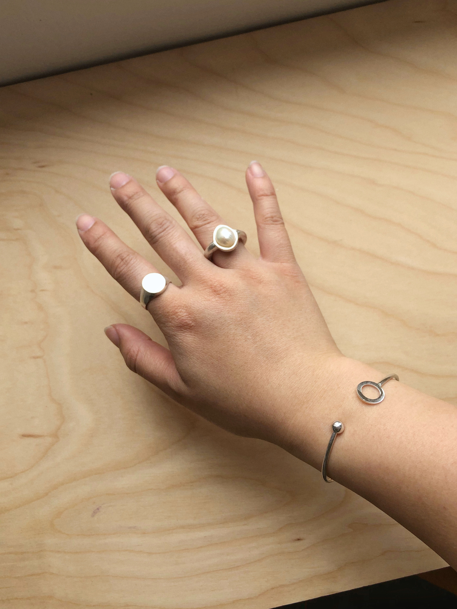
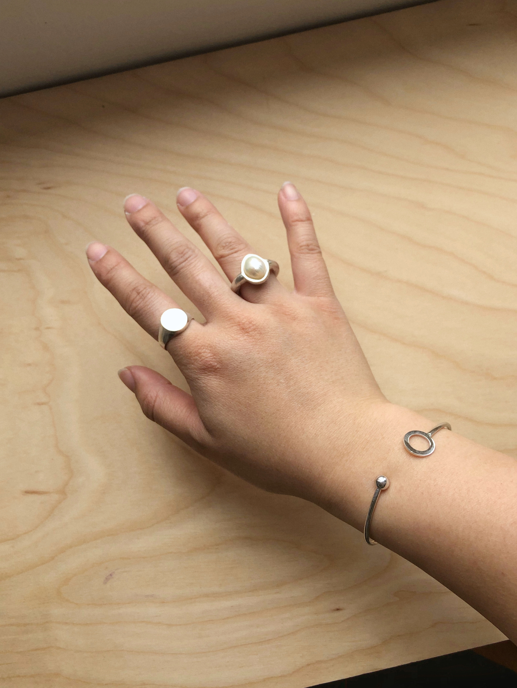
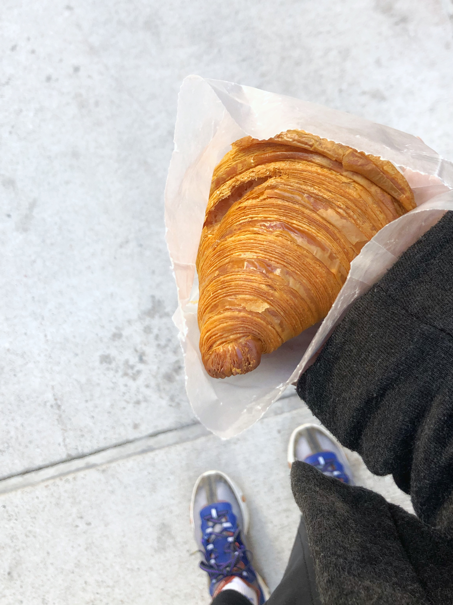
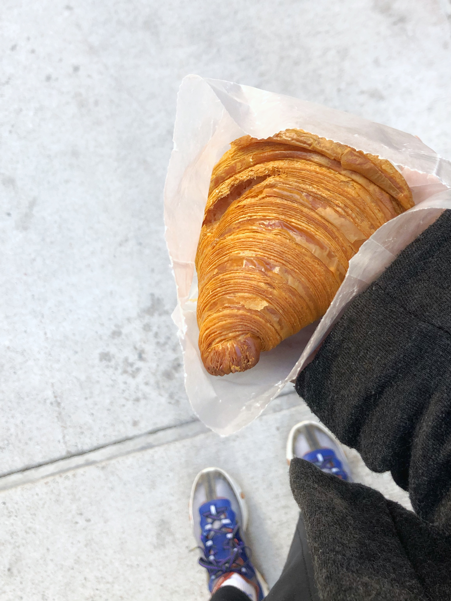

& 35mm
& 35mm enthusiast, and currently designs creative tools on the internet at Runway
enthusiast, and currently designs creative tools on the internet at Runway . She can also be found learning how to silversmith & make jewelry, climbing rocks
. She can also be found learning how to silversmith & make jewelry, climbing rocks , and always searching for a good croissant.
, and always searching for a good croissant.
In recent history, she designed a new homepage experience for WIRED dot com at Condé Nast
dot com at Condé Nast , and interfaces for creative tools at Apple
, and interfaces for creative tools at Apple . She received a B.H.A. in Design
. She received a B.H.A. in Design and Psychology from Carnegie Mellon University
and Psychology from Carnegie Mellon University .
.
Thank you for visiting. ✌︎(◡ ‿ ◡ ✌︎)